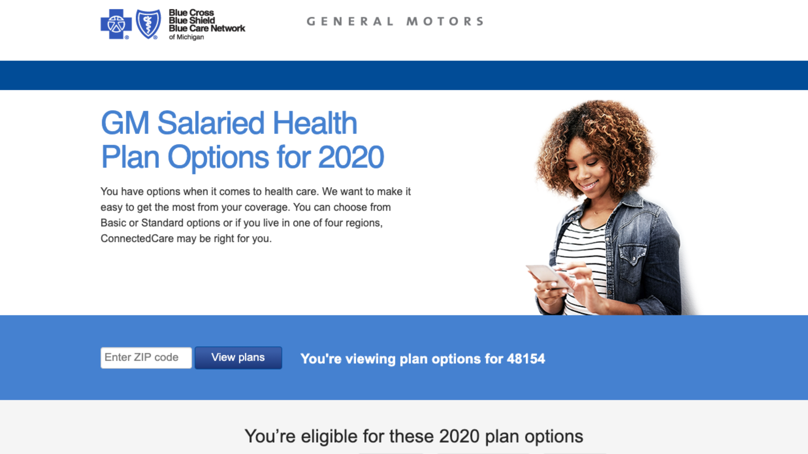
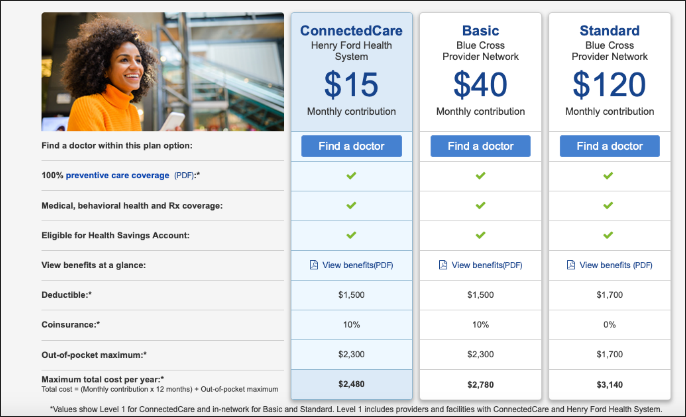
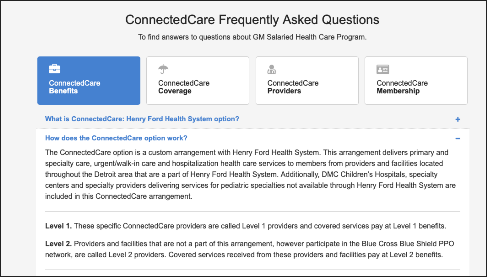

Product Owner & Digital Strategy Manager · 2013–2020
BCBSM
Helping consumers compare, choose and use their health insurance plans
I owned product and digital strategy for bcbsm.com, the public website for Blue Cross Blue Shield of Michigan. I led a team that translated dense health benefit information into content that helped people feel confident when choosing their health insurance plan.
These three projects show that work at different scales:
One content source for 60+ health plan pages
My roleProduct Owner
Problem space
Every one of bcbsm.com's 60+ individual health plans had its own detail page, built from more than 70 separate benefit elements entered by hand, plan by plan, including:
- Deductibles and coinsurance
- Coverage tiers
- Network details
Risk: Manual entry meant errors and inconsistencies across pages, and every update meant redoing the same work dozens of times.
Content challenge: Keep 60+ plan pages accurate and consistent, with the same design, without making every update a manual job.
My approach
- Built a CMS component to read plan data from a spreadsheet. The page's design and UI stayed exactly the same as before.
- Made the spreadsheet the single source of truth. Reviewing data across 60+ plans for consistency became one task instead of sixty separate ones.
- Created a process for benefits experts to update the data. Benefits experts could update plan data directly, without engineering support or CMS training.
Helping GM employees understand their new plans
My roleProduct Owner
Problem space
GM was launching a new, lower-cost health plan for salaried employees with a much smaller provider network. Employees needed to understand that tradeoff well enough to choose confidently:
- Network: one hospital network
- Cost: a lower-cost plan
- Coverage comparable to their existing options
Risk: If employees chose this plan without understanding the network, they could end up unhappy with it.
Content challenge: Help employees understand the tradeoff well enough to choose, and encourage enrollment only if the plan fit.
My approach
- Built a co-branded microsite with General Motors. The new plan was highlighted with the tradeoffs clearly explained.
- Designed a side-by-side comparison table. Network, cost and coverage side by side, so the tradeoff was visible at a glance instead of buried in a benefits PDF.
- Organized the FAQ by real questions. Benefits, Coverage, Providers and Membership instead of one long, undifferentiated list.
- Made education the primary goal, not enrollment. Educate first, encourage enrollment only if the plan fit someone's health needs.
What we shipped

Co-branded landing page. A distinct decision gets a distinct space. Click to open full resolution.

The tradeoff, made scannable. Network, monthly cost and coverage side by side.

Questions people actually ask. FAQs organized by the questions people ask, not by internal plan structure.
Tying a redesign to measurable business goals
My roleProduct Owner
Problem space
The public Careers page was desktop-only and text-heavy, built before anyone treated it as a recruiting tool. It had three calls to action with no clear priority and no tie to what Talent Acquisition needed:
- Desktop only
- Text-heavy, outdated design
- Three competing calls to action
Risk: Simply updating the website to be more modern wouldn't move the needle on Talent Acquisition's actual business goals.
Content challenge: Give the page one job, tied to one measurable goal: increasing qualified candidates for the Talent Acquisition team.
My approach
- Started from Talent Acquisition's goal. They wanted more qualified candidates, not a simple design refresh.
- Replaced three competing calls to action with one. It follows the reader down the page, instead of asking them to choose a path before they have context.
- Rebuilt it mobile-first. Most candidates weren't finding the page from a desktop, so the layout wasn't adapted down from a desktop design.
- Let photography and interactive elements carry part of the story. Dense paragraphs no longer had to do all the persuading alone.
What these three have in common
- Content tied to a named business goal. Every project traces back to something a stakeholder could be measured on.
- Plain language for genuinely complex decisions. Health benefits are dense by nature. The goal was to make the tradeoffs clear, not simplify it into something misleading.
- Content systems, not just pages. Build the system once, let it hold up at scale.
- Editorial judgment under pressure to just convert. The goal is to inform for solid decision making, not just drive up enrollment.
Want more detail on any of these case studies? Email me and I'm happy to walk through it.